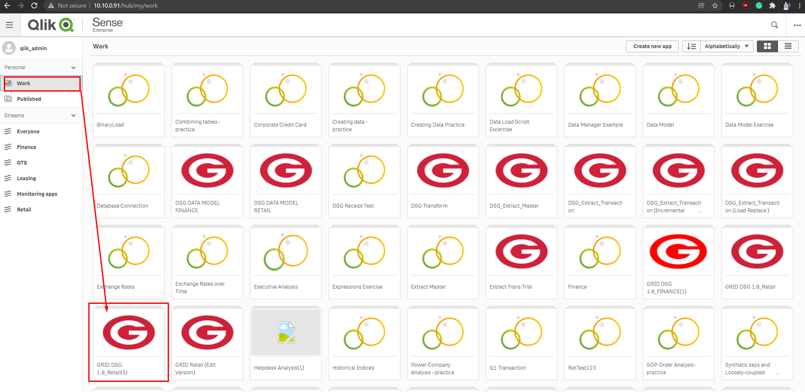

Qlik
What is Qlik and why do we use it?
Qlik or QlikSense is a Business Intelligence System for which business can easily get a KPI report for analysis and identification of key factors. DSG's use of Qlik constitutes the sales & performance of the company.
How to access Qlik?
There are actually 3-ways to access Qlik.
Via Web Browser:
- QMC: http://10.10.0.91/qmc/ - use this link to manage Qlik settings.
- Hub: http://10.10.0.91/hub/ - use this link to view/manage Qlik KPI.
Via VNC:
- IP Address:
10.10.0.91- This will enable you to manage the Main Qlik Server
Daily Checking
Part of your tasks as the Application Administrator is to check the consistency of data between MMS, ETL Server, and Qlik. To do this, follow the steps below:
-
Open hub in web browser
http://10.10.0.91/hub/, login with your assigned credentials then navigate to theRetailstream. -
Find
Sales Performance (Department View), choose a date and check for the total. -
Open the
Receiptworksheet from your ETL Daily Checking and crosscheck the total for that date and confirm if it matches with Qlik. If not, add that date to the ETL rerun queue.
Updating Section Access
There are instance in which you need to change the section access of the users. To do this, follow the steps below:
-
Open hub in web browser
http://10.10.0.91/hub/, login with your assigned credentials then navigate to theRetailstream. -
Duplicate the
GRID DSG 1.0_Retailapp. Wait the confirmation, this will take a few minutes. -
Navigate to
Workand open the duplicate. Usually denoted by(n)wherenis a digit.
-
While in the app, click the
compassicon in the upper left side on the app, this will open a context menu and selectData Load Editor. -
Navigate to
Section Accessand update the script as needed. For help on the script, visit official Qlik documentation here! -
After editing the script,
savethe app and on the hub and underworksection, look for the app that you've edited and republish it by replacing the app on theretailstream.
NOTE:
Any changes or update with section access will be reflected the next day after QMC tasks are completed.
Qlik Common Issues, Solutions, & Procedures
-
Cannot connect to
10.10.0.91.Make sure you're connected to the network. Ping
10.10.0.91and make sure that you receive a reply, otherwise contact ICT support. -
Data Missing /
Not FoundErrorsMake sure the data has done loading. Check by looking at QMC tasks if all are
successstatus and/or opening any KPI and looking at theLast Loadedin the upper-right, make sure it's today. If not, wait for the QMC tasks to finish. Note thatnot founderrors are known to be notoriously hard to diagnose.Start by checking the data in the MMS database using a query, then check ETL DTWHS, and finally QVD files. Also note that QVD files are very large and some can't be opened on a typical manner. Please consult the Qlik Documentation as I haven't done this myself. The best bet to fixing this issue is to wait for the next data reload to finish on the next day. -
QMC red alerts / Nodes Missing
Refresh the QMC page or if it persists, restart the Qlik Server. If still not okay, create a case to the Qlik Support page here.
-
QMC Failed Tasks
Check if Qlik has a connection and verify that the ETL Server
10.10.175.101is running or reachable. Try restarting the failed tasks. -
Server Restart
-
Process virus scanning.
(see error history) -
Reset Status
- Check the server and click the task with a
Resetstatus. - Click start and refresh for it to get started.
(see error history) - Check the server and click the task with a
-
CONFIGURE SYSTEM services stopped
-
Solution 1 - Delete some space in drive C or
Local Disk (C:) -
Solution 2 - Check the
Nodein QMC to see whether the issue lies on theCentral NodeorRIM Node, if the issue was caused by theRIM Node, restart both the ETL server and QLIK server.
(see error history) -
Solution 1 - Delete some space in drive C or
-
No Vendor Filter
- Check
ETL logs. - If you see
unknown column in the fieldlisterror in the vendor master file, the problem could be with the ETL user.
(see error history) - Check
-
QLIKSENSE user can't access
- Access QLIKSENSE server.
- Open run and type this command :
lusrmgr.mscto check if the user exists. - If the user exists, choose from the credentials provided by the result from the
commandand try to login. - Make sure to put
.\before typing the username
(see error history) -
Node is offline
NOTE:- Check QLIK Sense repository logs located at
drive C:\ProgramData\Qlik\Sense\Log\Repositoryand have it coordinated with the server admin. - Ping the port 4444 on the ETL server to check if connection is fine.
- Run command
netstat -an | find "127.0.0.1" - Check the IP configuration of both servers (ETL and QLIK) and see if they are obtaining the same gateway. If not, change gateway.
- After making changes, restart servers.
(see error history)Before the restart, the QLIK processing must be finished and ETL must be done with the reruns. To confirm if ETL has finished running, you will see
ETL FINISH. - Check QLIK Sense repository logs located at
-
ERROR 400 (Bad Request)
- Try restarting the browser. (You may also check the details of this error on the photo below)
(click here to see Qlik Advisory on this error)